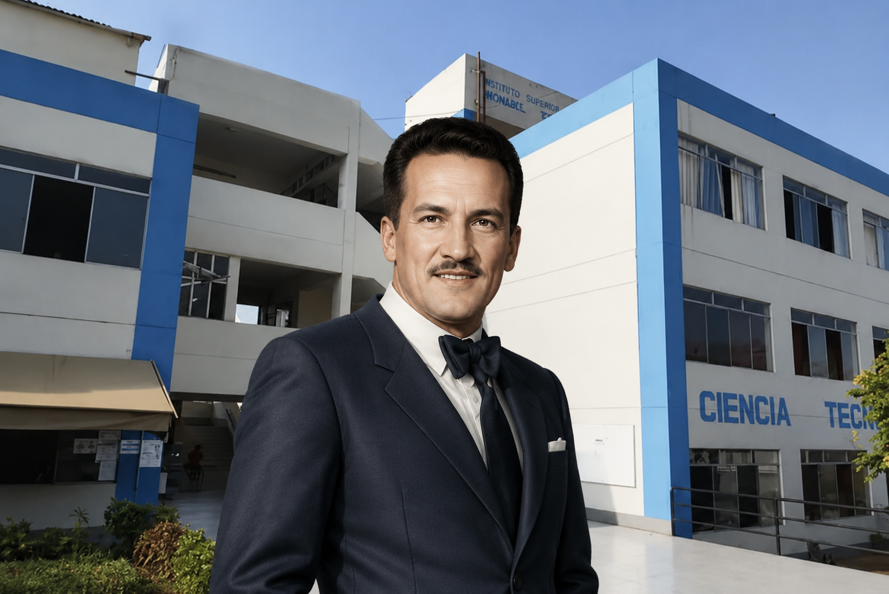
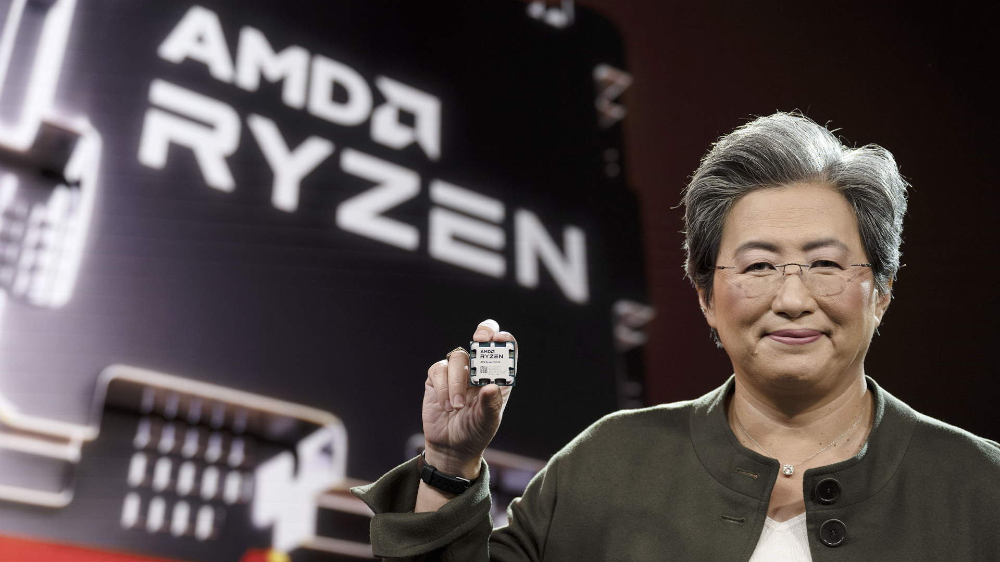

Manuel Seoane Corrales fue un destacado futbolista peruano, considerado una de las grandes figuras del fútbol nacional. Formó parte de la selección peruana y brilló por su habilidad, velocidad y capacidad goleadora.

Sam Altman es un empresario e inversionista estadounidense. Es reconocido por ser el director ejecutivo de OpenAI, organización dedicada al desarrollo de inteligencia artificial.
Bajo su liderazgo, OpenAI ha desarrollado herramientas como ChatGPT, DALL·E y otros modelos de inteligencia artificial utilizados por millones de personas.

La Dra. Lisa Su es una ingeniera eléctrica y empresaria estadounidense de origen taiwanés. Desde 2014 dirige AMD, una de las compañías líderes en el desarrollo de procesadores y tarjetas gráficas.
Gracias a su liderazgo, AMD logró un crecimiento importante en el mercado tecnológico, compitiendo con grandes empresas y lanzando productos de alto rendimiento para computadoras, servidores y videojuegos.